Time left:
Do not open new tabs or minimize the screen during the test. Test will terminate/freeze and your answers may not be saved. You may also get zero.
1. Write the number \({0.0000265}\) in scientific notation.
2. \({79}~{m^2}\) = _______ \(~{cm^2}\)
3. Convert 8 feet, 11 inches to inches. (Note: 1 ft = 12 in)
4. Which of the following is the solution on the given systems of linear equations?
\({5x-y=7}\)
\({y=4x-6}\)
5. What is the volume of a prism with a base area of \({72.3}~{cm^2}\) and a height (altitude) of \({6.50}~{cm}\)?Apply the rules of measurement.
6. 4,000 mL = _________ L
7. Convert \({104}~{^oF}\) to \({^oC}\). Use \({^oC} = {5\over9}({^oF}{-32})\).
8. What is the metric Vernier caliper reading below?
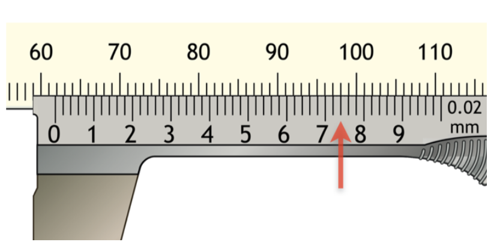
9. What is the reading of the metric micrometer below?
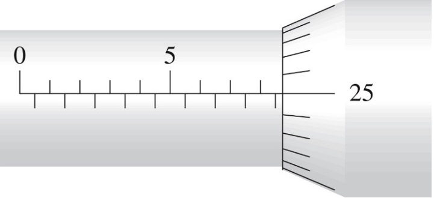
10. Use the rules for subtraction to subtract \({5.236}~{m}\) from \({18.6}~{m}\).
11. Solve the equation: \({2(x-5)=6}\).
12. Solve for \(y\) in terms of \(x\).
\(3x-4y=12\)
13. A large gear (A) with 60 teeth turning at 200 rpm turns a small gear (B) with 50 teeth. At how many rpm does the small gear turn?
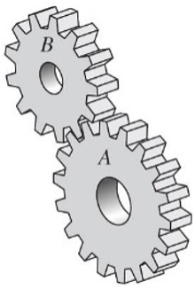
14. Given that \({sin}~{A} = 0.4567\), what is the degree measure of angle \(A\) to the nearest tenth?
15. Find the median of the following set of measurements:
45 mm, 64 mm, 18 mm, 45 mm, 43 mm, 75 mm
16. Given that \({sin}~{A} = 0.2356\), find the measure of angle \(A\) to the nearest tenth of a degree.
17. Find the hypotenuse of the right triangle below.
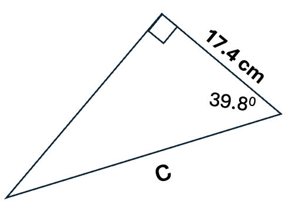
18. Find the area of the triangle shown below. Apply the rules of measurements.
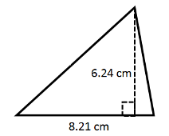
19. The rise to run ratio of a sloped plane is 3:8. What is the rise if the run is 20 to the nearest tenth?
20. Find the measure of angle B below to the nearest tenth of a degree.
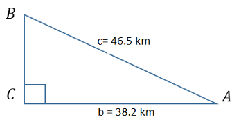
21. Two sides of the two rectangles are proportional. The width and length of the large rectangle are 4.3 in and 7.6 in, respectively. If the width of the small rectangle is 3.4 in, how long is its length?
22. Find the value of \({sin}~{58^o}\) to four decimal places.
23. The sum of two voltages in 156 V and the difference between them is 28 V. Find the two voltages.
24. Find the area of the trapezoid shown below.Apply rules of measurement.
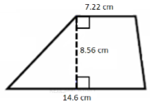
25. What is the mean of the following set of measurements?
46 kg, 54 kg, 31 kg, 68 kg, 46 kg, 83 kg, 22 kg
26. A flywheel has 85 teeth, and a starter drive-gear has 40 teeth. Find the ratio of flywheel teeth to drive-gear teeth.
27. Solve the equation: \(3a + 5 = 2a + 11\)
28. Which of the following points is a solution of the equation \(2x+9y= 5\)?
29. Which of the following is true about the right triangle below?
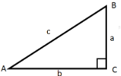
30. Using the formula \(V=πr^2h\), find the volume of the cylinder shown below where \({r=5.60}~m\) and \(h= 12.0~m\). Use \(π=3.14\) and apply rules of measurements.
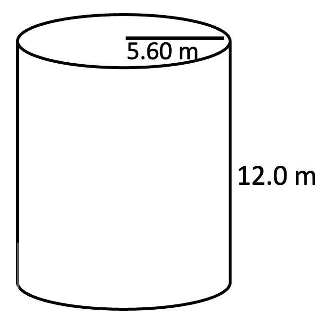
31. Find the total surface area (TSA) of the prism below.
Use the formula: \(TSA =2LW+(2L+2W)H\).
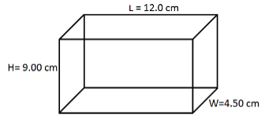
32. Convert 36 inches (in) to centimeters (cm). (Note: 1 in = 2.54 cm)
33. Solve the proportion: \({2x\over9} = {24\over15}\)
34. What is the reading on this metric ruler?
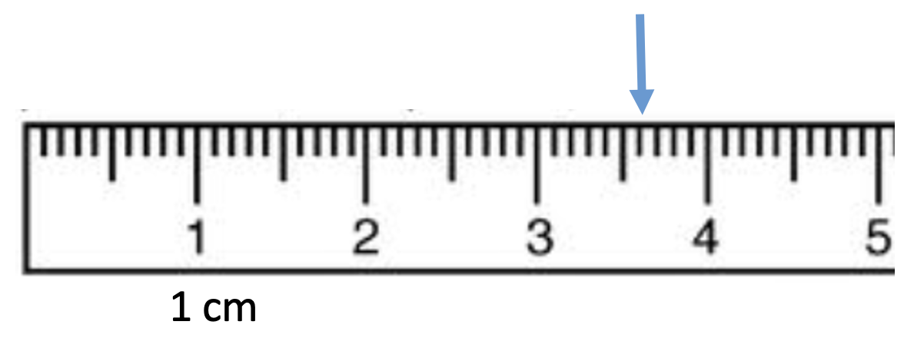
35. A 20 ft by 15 ft rectangular room was carpeted and the price of the carpet is 8.00 SAR per square foot. How much was spent?
36. Given the equation \({Q=WC(T_1-T_2)} \), solve for \(T_1\).
37. Find the LCD. \({3\over 18}+{5\over 14}+{1\over 21}\)
38. What is the radius of the circle whose area is 128 \(cm^2\)? (Use π= 3.14)
39. What is the circumference of a circle if its diameter is 13.6 cm?
40. The circle graph below shows the percentage production of oil in the four regions in one day.What central angle of a circle would show the percent of oil production in the "South" region. Round your answer to the nearest whole degree if needed.
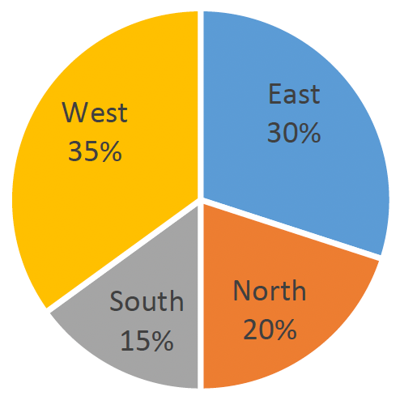
41. What is the radius of a circle if its circumference is 156 in? (Use π= 3.14)
42. Read the US Vernier caliper below.
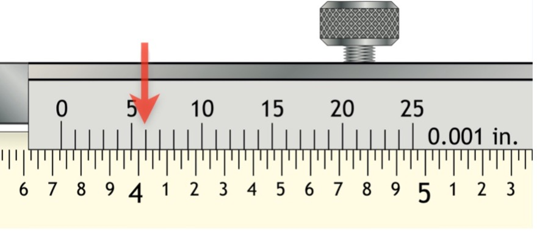
43. Read the US Vernier micrometer below.
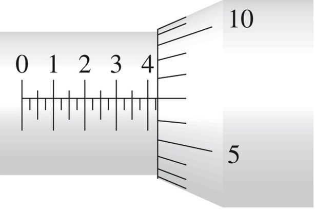
44. Convert the problem to a percent equation:
"How much is 20% of 3,500?"
45. An object is 9 ft from the fulcrum and balances a second object weighing 325 lb. If the second object is placed 6.5 ft from the fulcrum, how much does the first object weigh? Express your answer to the nearest lb.
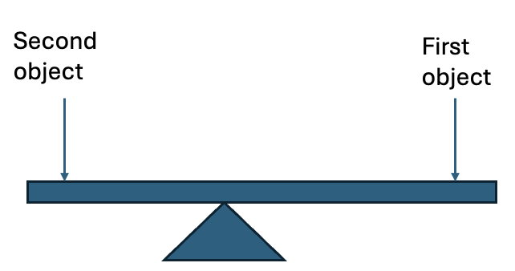
46. Seven fire extinguishers and five fire hoses cost SAR 2325 while four fire extinguishers and nine fire hoses cost SAR 1605. Find the cost of each fire hose.
47. The angle of depression from the top of the lighthouse to a navy patrol boat is \(32^o\).The height of the lighthouse is 178 ft. What is the distance of the navy patrol boat from the base of the lighthouse? Apply the rules of measurement.
48. The capacitance of three capacitors in a parallel circuit are 12 F, 15 F, and 18 F. If a fourth capacitor is added to the circuit, the average capacitance is 17 F for all four capacitors. Calculate the capacitance of the added capacitor. (Farad, denoted by F, is the unit of capacitance.)
49. What is the total cost, to the nearest SAR, of fencing a circular pond with diameter 1.300 m if the fencing cost is SAR 750 per meter.Use π= 3.14.
50. The monthly budget for office supplies of an office was decreased from SAR60,000 to SAR 51,000. What is the percent of decrease in the budget?